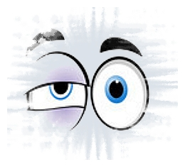

|
C L A U S E —
O N L I N E Q U I Z
Task 1
Consider the short text below. Mark off each ranking clause with //...//, downranked clause with [[...]], and inserted clause with «...».
// Before you criticise anyone, // walk ten miles in his shoes. // That way, if he ever got angry with your criticism, // you'd be ten miles away. // And you'd also have his shoes. //
Task 2
Now try a slightly longer text. Use the same conventions to mark off each ranking and downranked clause.
// Love anything // and your heart will be wrung // and possibly broken. // If you want to keep it intact // you must give it to no one, not even an animal. // Wrap it carefully round with hobbies and little luxuries; // avoid all entanglements. // Lock it up safe in the casket or coffin of your selfishness. // But in that casket—safe, dark, motionless, airless—it will change. // It will not be broken; // it will become unbreakable, impenetrable, irredeemable. // [[ To love ]] is [[ to be vulnerable. ]] //
|
Directional links

|